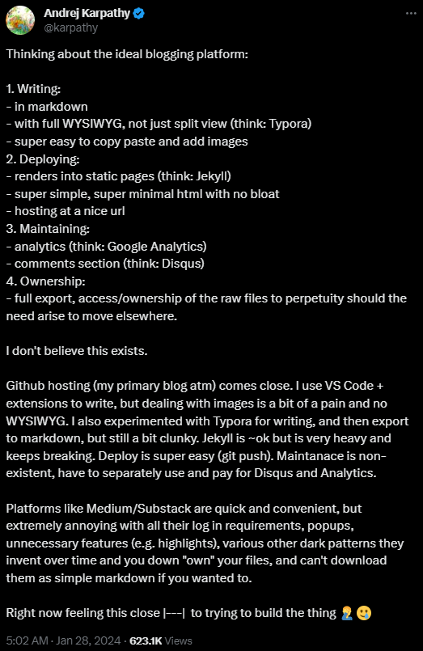

Abstract : I move beyond digital apps when it comes notes taking and journaling, why? Because controlling raw resources file is important. File over app is a philosophy where you get to control all file with formats that easy to read over long period of time, no matter how developed technology is. My aim is to create a digital artifact on my works.
the app
I realize that I need to return to long-form online writing, but I don’t enjoy the current blogging services such as WordPress, Medium, or Substack. While WordPress is great for personal websites and branding, it is essentially a web-service app that I find lacks personal control and flexibility. Medium and Substack are simply platforms for publishing essays; you can’t do much more with them.
Note-taking apps are also big business. I have used Notion before, but again, regardless of how good the features are, the need to use an account and the fact that the notes are saved on server annoy me.
I hate apps.
the ideal platform
Andrej Karpathy shared a concern on his Twitter account about the ideal blogging platfrom,

He shared everything I want and more:
- Minimal and enjoyable editor that gives good writing experiences, yet we retain control of the file without the need to log in and save it to their server.
- A blogging site as a static page is more than enough, with full control of CSS, JS, and HTML files. I prefer building them from scratch to avoid unnecessary bloat. Being minimal is good.
- Ablet to view analytics and maintain discussions.
- Easy importing and exporting with just git, since you control all the files you need.
file-over-app
Thanks to Karpathy’s tweet, I found the perfect philosophy articulated by Steph Ango in his blog post, “File Over App.”
In short, it emphasizes the importance of full control over files with formats that can last long in the blogging or note-taking business, such as Markdown or Org.
solution
The solution is right there below his tweet. You can read this beautiful solution written by Alex Oliveira.
-
For writing, we use Markdown format due to its simplicity. But writing in Markdown is not fun, so you need to use the Obsidian as editor. It is simple but also has good plugins and themes that levelling up the experience. Nevertheless, the result is still a file in Markdown format.
-
For blogging, write your own blogging theme (html, javascript, css) through static page generator like hugo and jekyll. Don’t forget to use version control like git. To deploy it, use a free service hosting like GitHub Pages.
-
Analytics can be handled using Google Analytics, and discussions can be managed through the Disqus service. Maybe this is the only web service that we use, but it’s not that important. It’s mainly for audience engagement.
You can easily find technical guides on the internet. As you can see, the result is the blog that you are reading right now.
Have fun!